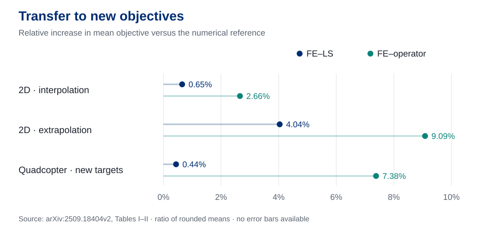

One dynamical system, changing objectives
Research summary
A new destination or obstacle configuration changes the optimal control problem. Solving a fresh trajectory optimization for every objective and initial condition can be expensive. This paper learns a reusable representation of the family of feedback policies, with the dynamics held fixed within each problem family.
The task parameter \(\boldsymbol\eta\) changes the running or terminal cost. A function encoder (FE) represents the corresponding policy using neural basis functions of state and time. Adaptation changes their coefficients; the learned bases remain fixed.
Reusable policy representation
Learn a common set of vector-valued basis functions from demonstrations across training tasks.
Two transfer routes
Infer coefficients by least squares (LS) from task data, or with an optional learned parameter-to-coefficient operator.
Feedback across initial states
Evaluate a state-and-time policy repeatedly in a rollout, tested on new initial conditions and objectives.
Problem formulation: Section II, Equations (1)–(3).
Learn the bases offline. Infer the coefficients online.
The representation separates the part shared across tasks from the part that changes with the objective:
Here \(\phi_j\) is a learned policy basis function, \(c_j\) is its task-dependent coefficient, and \(p\) is the basis size. This is an approximation to the target feedback policy.
Fit a common control space
Collect state–time–control demonstrations \(\mathcal D_{S_k}\) for each training task, using numerical optimal control solvers or existing policies. For the current bases, solve for each task’s LS coefficients. Then update the basis parameters by gradient descent on reconstruction error plus basis-norm regularization. Repeat these steps during training.
Here \(M\) is the number of demonstration samples. Algorithm 1 adds \(\lambda\sum_j\|\phi_j\|_{\mathcal H}^2\) to the reconstruction loss, with regularization weight \(\lambda\). Tikhonov regularization improves numerical stability of the coefficient solve.
Learn to predict coefficients from task parameters
Once the bases are trained, an additional network \(\psi_{\boldsymbol\gamma}\) can map a structured task specification to coefficients. Algorithm 2 trains it against LS coefficient targets while holding the bases fixed.
This stage adds offline training and data requirements. The paper evaluates the operator for target-location tasks; its bicycle experiments use LS only.
Choose how to adapt
LS: new task demonstrations
Project demonstrated controls onto the learned bases. New task data are required, but the neural bases are not retrained.
Operator: task specification
Use the separately trained operator to predict coefficients. No demonstrations from the new task are needed during inference.
Evaluate, apply control, observe the next state
At each rollout step, the current state and time enter the fixed bases. Combine their outputs with the inferred coefficients, apply the resulting control to the dynamics, and feed the updated state into the next policy evaluation. The coefficients describe the task; the basis evaluations respond to the changing state.
Method: Equations (7)–(8) and Algorithms 1–2.
Transfer across targets and obstacle costs
Three simulated problem families—two-dimensional (2D) path planning, quadcopter control, and bicycle control—test the learned policies against discretization-based numerical optimal control solutions. Experiments use an NVIDIA A100 graphics processing unit (GPU). Function encoder transfer with least-squares coefficients is labeled FE–LS; FE–operator uses the learned coefficient network. Values are reported means in the paper's objective units; confidence intervals and variability across training seeds are not reported.


2D path planning: new destinations
A planar integrator \(\dot{\mathbf x}=\mathbf u\) navigates a Gaussian obstacle cost. Sixteen target locations form the training set, with 200 numerically solved trajectories per target. The horizon is \(T=1\), discretized into 20 steps. Tests include seen targets, new interpolated targets, and extrapolation, all with new initial states.
| Evaluation | Numerical reference | FE–LS | FE–operator |
|---|---|---|---|
| Seen target | 4.8609 | 4.8737 | 4.9625 |
| New target: interpolation | 4.8295 | 4.8608 | 4.9578 |
| New target: extrapolation | 4.8782 | 5.0751 | 5.3214 |
The paper’s objective combines control effort, a Gaussian obstacle penalty, and quadratic terminal cost. Its published means average over target states and initial conditions. The released LS evaluation script samples 500 state–time–control points from 40 trajectories per task for coefficient inference, then evaluates those 40 initial states.
Training setup and objective
Training uses 100 bases, a four-layer multilayer perceptron with hidden width 256, adaptive moment estimation (Adam) at learning rate 0.001, and 20,000 training steps.
The reported objective uses squared control norms. The released 2D evaluation script accumulates unsquared control norms, so its cost calculation differs from the paper's formulation.
Quadcopter: nonlinear dynamics in 12 states
The quadcopter has 12 states and four control inputs: thrust and three torques. Training uses 64 target locations with 80 trajectories per target. Testing introduces 27 new targets, each with 25 trajectories. The horizon is \(T=2\), with 50 integration steps.
| Evaluation | Numerical reference | FE–LS | FE–operator |
|---|---|---|---|
| Seen target | 276.9546 | 278.8933 | 278.4307 |
| New target | 274.3089 | 275.5074 | 294.5629 |
The released LS test script fits coefficients using five trajectories per new target and evaluates feedback rollouts on the other 20. For new targets, the published LS and reference means are close; the operator’s mean is higher. These are comparisons with the numerical reference, not certificates of global optimality.
Training setup
Section V-B uses the same 100-basis, four-layer, width-256 architecture and optimizer settings as the 2D example, with 100,000 iterations. The objective combines quadratic control effort with a terminal state penalty weighted by 500.
Bicycle: changing the running cost
A nonlinear bicycle model changes its route as one or two Gaussian obstacle penalties vary. This experiment uses LS transfer only. The single-obstacle study has 144 training and 36 test configurations. The double-obstacle study splits 576 configurations into 544 for training and 32 for testing. Each configuration has 100 trajectories; the horizon is \(T=5\).
| Setting | Method | Control cost | Obstacle cost | Terminal position deviation |
|---|---|---|---|---|
| Single obstacle | FE–LS | 2.6789 | 0.0463 | 0.0012 |
| Single obstacle | Numerical reference | 2.6480 | 0.0385 | 0.00005 |
| Double obstacles | FE–LS | 3.0370 | 0.5750 | 0.0046 |
| Double obstacles | Numerical reference | 2.9668 | 0.5286 | 0.00004 |
Table III averages over unseen configurations. Terminal position deviation is the reported position-error metric; the released evaluation code computes squared Euclidean error in \(x,y\). The LS scripts use 50 trajectories to estimate coefficients and evaluate the other 50. The obstacle is a smooth cost penalty, so these results do not establish collision-free operation.
Results: Tables I–III. Numerical references use SciPy or CasADi. The paper provides no end-to-end timing table, inference batch-size benchmark, or repeated-run statistics.
What the results establish—and their scope
Transfer within a problem family
The dynamics stay fixed within each family; objectives and initial conditions vary. The experiments support transfer on the tested distributions. Extrapolation success in selected cases is not a guarantee for arbitrary new tasks.
Policy approximation theory
The paper invokes an existence result for approximating continuous functions in a separable Hilbert space on a compact domain. This does not guarantee that a finite trained network achieves a specified control performance.
Finite-sample LS analysis
Theorem 2 and its appendix analyze coefficient estimation under independent, identically distributed samples, bounded bases and targets, and a positive-definite population Gram matrix. The proof also requires enough samples to control the empirical Gram perturbation.
Costs and constraints
The benchmarks use numerical simulation and soft obstacle penalties. They do not certify closed-loop stability, hard constraint satisfaction, collision avoidance, or physical deployment performance.
How to interpret the sample convergence result
The appendix gives an asymptotic \(\mathcal O(M^{-1/2})\) coefficient-error rate for a fixed basis, with conditioning-dependent constants and additional finite-sample terms. It concerns unregularized population and empirical LS solutions. It is not an exact-optimality claim, and does not directly certify correlated trajectory samples or the optional operator network.
Paper, implementation, and experimental material
Reproducible implementation: research code version 65337fd, with FunctionEncoder 0.1.1 and PyTorch 2.8.0. The bicycle examples use separately hosted datasets linked from the code.
Cite the paper
BibTeX for the arXiv revision summarized on this page.
@misc{li2026zeroshottransferablesolutionmethod,
title = {Zero-Shot Transferable Solution Method for Parametric Optimal Control Problems},
author = {Xingjian Li and Kelvin Kan and Deepanshu Verma and Krishna Kumar and Stanley Osher and J{\'{a}}n Drgo{\v{n}}a},
year = {2026},
eprint = {2509.18404},
archivePrefix = {arXiv},
primaryClass = {math.OC},
doi = {10.48550/arXiv.2509.18404},
url = {https://arxiv.org/abs/2509.18404v2},
note = {Version 2, 11 March 2026}
}